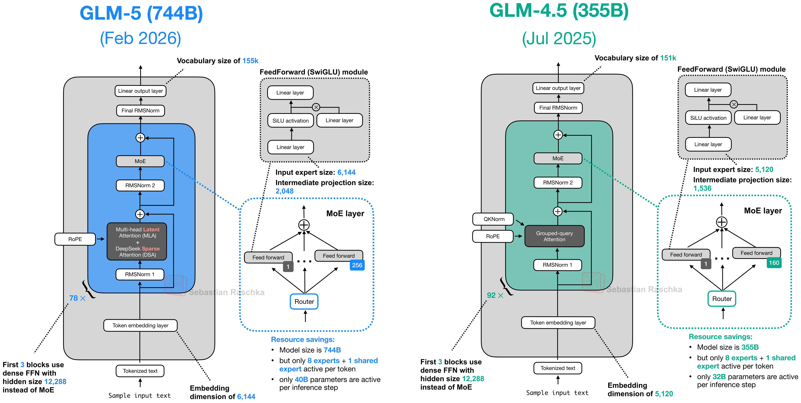
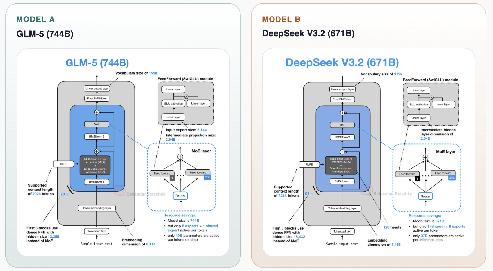
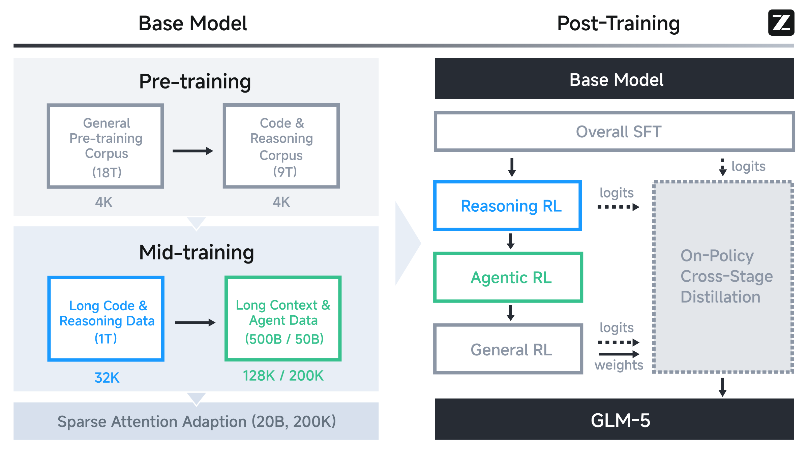
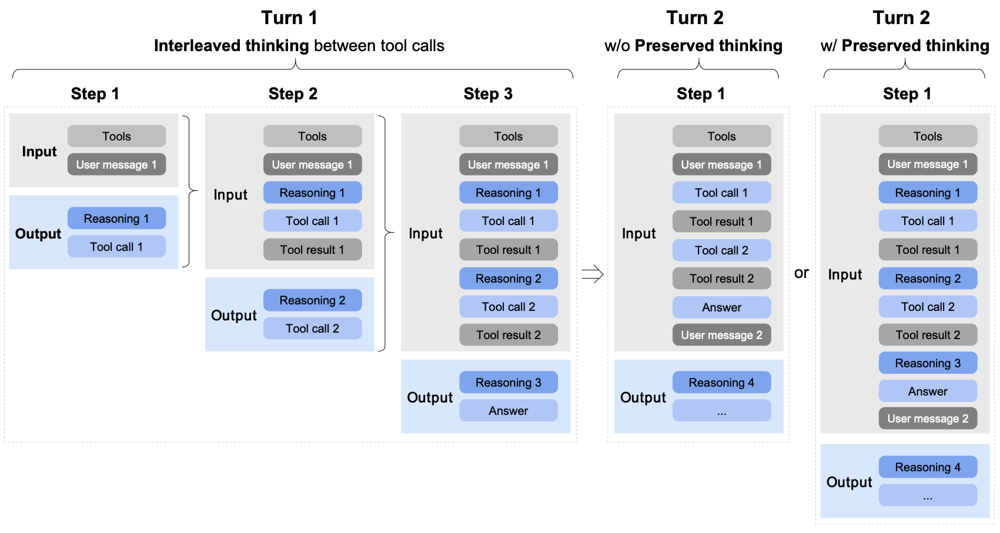
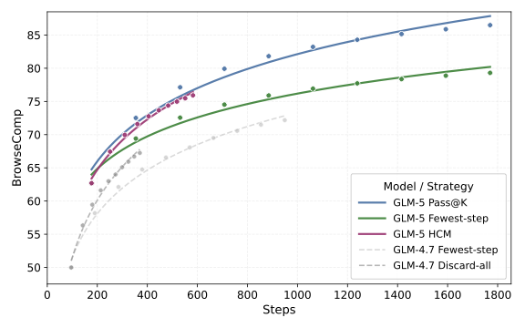

GLM-4.5 (Foundation)
ARC capabilities
Build a strong agentic, reasoning, and coding base model.
LLM Technical Report Seminar
From Vibe Coding to Agentic Engineering
Paper Overview
We mostly follow the report order, but spend more attention on data, RL, and evaluation signals.
What GLM-5 is optimizing for.
MoE scale, MLA/MTP, DSA and long context.
Short pass on data and context extension.
SFT briefly, then RL and agent environments in detail.
What signals they trust: ARC, real-world SWE, long-horizon tasks.
Short ending section from the paper.
We will note training/serving/chip-adaptation infrastructure, but not make it a main track.
Main-body TeX word-count estimate; appendix excluded.
Model Context / Agenda
ARC capabilities
Build a strong agentic, reasoning, and coding base model.
Real-world SWE
Move from coding assistance toward long-horizon, end-to-end software engineering tasks.
Abstract, last line
"Code, models, and more information are available at github.com/zai-org/GLM-5."
Main Results
Main Results / Evidence
Methods
Enables efficient long context by reducing training and inference costs while preserving long-context understanding and reasoning depth.
Decouples generation from training, improving GPU utilization and enabling massive-scale exploration of agent trajectories.
Improve autonomous decision-making by learning from diverse long-horizon interactions, especially planning and self-correction.
Optimizes kernels through upper-level inference frameworks across seven Chinese GPU ecosystems.
Together, these contributions enable more efficient long-context modeling and scalable RL for long-horizon, real-world agent tasks.
Section 1
MoE scale, MLA, DSA, and MTP.
Architecture / Attention
For real-world SWE agents, context grows across long-horizon workflows. GLM-5’s architecture targets this evolving context while keeping training and inference practical.
For the current token, choose a smaller set of relevant previous tokens.
Perform attention over the selected tokens instead of the full context.
Architecture / Attention
The token-selection mechanism determines what context the current token can use.
This choice affects model performance, decoding cost, and KV-cache footprint.
Architecture / Attention
GQA-8: 8 KV heads x (128 K + 128 V) = 2048 cached dims.
MLA: 512 latent KV + 64 RoPE key = 576 cached dims.
MLA stores much less cache, but each head scores against a 576-dim cached vector. GLM-5 reduces head count to lower decode cost.
Muon Split orthogonalizes up-projections per head, relaxing cross-head coupling and closing most of the GQA quality gap.
| Dataset | Hellaswag | MMLU | C-Eval | RACE | BBH | GSM8K | HumanEval |
|---|---|---|---|---|---|---|---|
| GQA-8 | 77.3 | 61.2 | 60.0 | 79.6 | 53.3 | 47.6 | 38.5 |
| MLA | 77.3 | 61.5 | 59.7 | 77.8 | 48.9 | 46.2 | 33.5 |
| MLA + Muon Split | 77.8 | 62.5 | 62.1 | 79.9 | 51.8 | 45.0 | 36.7 |
| MLA-256 + Muon Split | 77.4 | 62.0 | 59.9 | 79.6 | 51.3 | 47.5 | 36.6 |
Evaluation / Before and After Post-training
| Benchmark | DeepSeek-V3 Base |
Kimi-K2 Base |
GLM-4.5 Base |
GLM-5 Base |
|---|---|---|---|---|
| English | ||||
| SimpleQA | 26.6 | 35.3 | 30.0 | 36.0 |
| BBH | 88.4 | 88.7 | 86.2 | 87.4 |
| MMLU | 87.2 | 87.8 | 86.1 | 88.3 |
| HellaSwag | 88.9 | 94.6 | 87.1 | 88.1 |
| Code | ||||
| EvalPlus | 65.6 | 80.3 | 78.1 | 87.0 |
| LiveCodeBench | 24.6 | 26.3 | 28.1 | 34.4 |
| Math | ||||
| GSM8K | 87.6 | 92.1 | 79.4 | 68.8 |
| MATH | 62.6 | 70.2 | 61.0 | 56.4 |
| Chinese | ||||
| C-Eval | 90.1 | 92.5 | 86.9 | 88.8 |
| Benchmark | GLM-5 | GLM-4.7 | DeepSeek V3.2 |
Best listed |
|---|---|---|---|---|
| Reasoning & General | ||||
| HLE | 30.5 | 24.8 | 25.1 | 37.2 |
| HLE w/ Tools | 50.4 | 42.8 | 40.8 | 51.8 |
| GPQA-Diamond | 86.0 | 85.7 | 82.4 | 92.4 |
| LongBench v2 | 64.5 | 59.1 | 59.8 | 68.2 |
| Coding | ||||
| SWE-bench Ver. | 77.8 | 73.8 | 73.1 | 80.9 |
| Terminal-Bench 2 | 56.2 / 60.7† | 41.0 | 39.3 | 59.3 |
| Agentic | ||||
| BrowseComp | 62.0 | 52.0 | 51.4 | 62.0 |
| MCP-Atlas | 67.8 | 52.0 | 62.2 | 68.0 |
| GDPval-AA Elo | 1,409 | 1,198 | 1,195 | 1,462 |
Left: base-model appendix table subset. Right: Table 7 subset; † marks verified Terminal-Bench 2.0. “Best listed” is the highest value among models reported in the paper table.
Architecture / Attention
DSA replaces dense O(L2) attention with dynamic, fine-grained selection. Instead of a fixed pattern like sliding windows, it uses content to decide which tokens are important.
Reported attention-compute reduction: roughly 1.5-2x for long sequences.14 sequences per step, 202,752 tokens each, max LR 5e-3.
Uses the mid-training data mixture and hyperparameters; no separate DSA data breakdown is given.
DeepSeek-V3.2-Exp maintains the same benchmark performance as its dense predecessor; this is presented as evidence that about 90% of long-context attention entries are redundant. GLM-5 DSA reference contrast: 20B tokens vs. DeepSeek-V3.2's 943.7B.
Architecture / Attention
| MQ-NIAH-128k | MV-NIAH-128k | SQuAD-128k | HotpotQA-128k | |
|---|---|---|---|---|
| MLA | 100.0 | 95.5 | 79.7 | 66.3 |
| DSA | 100.0 | 97.0 | 86.0 | 63.0 |
After 20B adaptation tokens: close long-context performance, then tied SFT loss/evaluation after the same SFT data.
Architecture / Attention
A fixed alternating pattern of full-attention and windowed-attention layers applied uniformly across the network.
A linear attention variant that replaces the quadratic softmax attention computation with a gated linear recurrence, reducing the computational cost of attention from quadratic to linear in sequence length.
Search-based layer selection: retain full attention where it matters, convert selected layers to SWA, and discover the pattern at 16K with beam search.
Removes Conv1d and explicit gating modules, then maps pretrained Q/K/V projection weights into the linear recurrence formulation.
Architecture / Attention
| 4K | 8K | 16K | 32K | 64K | 128K | |
|---|---|---|---|---|---|---|
| GLM-9B Full Attn | 95.19 | 93.67 | 92.01 | 91.09 | 85.35 | 75.28 |
| SWA Interleave | 94.87 | 54.02 | 25.89 | 12.61 | 8.32 | 6.51 |
| SWA Pattern | 95.78 | 92.54 | 88.92 | 82.52 | 70.23 | 53.95 |
Both SWA methods use a 1:1 full-attention/SWA layer ratio with a 4096-token window. The search uses beam size 8, optimizes two layers per step at 16K, and applies the resulting pattern to all tested context lengths.
Architecture / Attention
| RULER 64K / 128K | MRCR 64K / 128K | HELMET-ICL 64K / 128K | RepoQA 64K / 128K | |
|---|---|---|---|---|
| GLM-9B | 85.35 / 75.28 | 36.53 / 35.39 | 77.68 / 77.36 | 69.00 / 65.83 |
| SWA Interleave | 65.94 / 44.93 ↓19.41 / ↓30.35 | 30.03 / 28.83 ↓6.50 / ↓6.56 | 75.96 / 63.52 ↓1.72 / ↓13.84 | 50.33 / 39.33 ↓18.67 / ↓26.50 |
| SWA Pattern | 83.72 / 69.59 ↓1.63 / ↓5.69 | 35.02 / 33.58 ↓1.51 / ↓1.81 | 76.48 / 74.60 ↓1.20 / ↓2.76 | 62.33 / 51.17 ↓6.67 / ↓14.66 |
| GDN | 76.76 / 64.00 ↓8.59 / ↓11.28 | 31.72 / 30.22 ↓4.81 / ↓5.17 | 76.88 / 74.84 ↓0.80 / ↓2.52 | 65.50 / 56.17 ↓3.50 / ↓9.66 |
| SimpleGDN | 81.76 / 67.03 ↓3.59 / ↓8.25 | 33.03 / 31.27 ↓3.50 / ↓4.12 | 79.80 / 81.84 ↑2.12 / ↑4.48 | 65.50 / 58.50 ↓3.50 / ↓7.33 |
Each method keeps a 1:1 ratio between efficient-attention layers and full attention layers. In contrast, DSA is lossless by construction: its lightning indexer achieves token-level sparsity without discarding long-range dependencies.
Architecture / Attention
| 4K | 8K | 16K | 32K | 64K | 128K | |
|---|---|---|---|---|---|---|
| GLM-4.7-Flash | 97.44 | 96.72 | 95.83 | 92.96 | 85.34 | 79.21 |
| + DSA warmup | 97.51 | 96.54 | 95.40 | 90.09 | 84.05 | 71.35 |
| + DSA | 96.77 | 96.25 | 96.69 | 93.45 | 87.06 | 78.86 |
Warmup trains only the indexer with base weights frozen; the full DSA variant jointly trains model and indexer for 150B tokens.
Architecture / MTP
MTP improves base model performance and acts as a draft model for speculative decoding.
Predicting the next n tokens normally requires n MTP layers, so MTP parameters and KV cache scale with speculative steps.
A single MTP layer predicts the next 2 tokens during inference, creating a training-inference discrepancy that reduces second-token acceptance.
GLM-5 shares parameters across 3 MTP layers during training, keeping draft-model memory cost consistent with the single-layer setup.
Same number of speculative steps: 4, measured on the paper’s private prompt set.
Architecture Summary
Architecture Summary

Architecture Summary

Section 2
Base data, mid-training, and the long-context curriculum.
Training / Overview

Training / Pretraining
Web documents from the inherited GLM-4.5 web pipeline.
Adds a sentence-embedding quality selector and a knowledge-focused selector trained from Wikipedia entries plus LLM-labeled examples to recover long-tail knowledge.
Major code hosting snapshots and web pages that contain code.
Refreshes sources, expands code web collection, fixes Software Heritage metadata alignment, adds classifiers for lower-resource languages such as Scala, Swift, and Lua, and reaches 28% more fuzzily deduplicated unique tokens.
High-quality math and science material from webpages, books, and academic papers.
Improves extraction and PDF parsing, scores candidates for educational value, uses chunk-and-aggregate scoring for long documents, and filters out synthetic, AI-generated, or template-based data.
Training / Midtraining
32K / 1T tokens -> 128K / 500B -> 200K / 50B.
A 200K stage beyond GLM-4.5's 128K maximum, improving ultra-long documents and complex multi-file codebases.
Repo files + commit diffs + GitHub issues + pull requests + relevant source files.
Broader repo pool yields about 10M issue-PR pairs; stricter issue-level filtering leaves about 160B unique tokens.
Books, papers, and long documents filtered by perplexity, deduplication, and length; knowledge-heavy domains are upsampled.
Constructed examples create long-range dependencies. Similar texts are interleaved to reduce lost-in-the-middle, and MRCR-like recall data is added at 200K.
Training / DSA Bridge
After mid-training, GLM-5 runs a short DSA warm-up, then a 20B-token sparse adaptation stage using the mid-training data mixture and hyperparameters.
We have framed DSA as reducing memory and compute. But sparse attention might also change quality: it could improve long-context focus, or it could make optimization harder before the model is ready.
The report shows DSA closely matches MLA after adaptation; it does not isolate whether DSA itself improves final model quality beyond efficiency.
Section 3
SFT, RL, On Policy Distillation.
Post-training / SFT
Optimizes for a more logical and concise style. Role-play data covers more languages and configurations, then uses automatic and human filtering.
Logical reasoning uses verifiable problems and rejection sampling. Math/science keeps prompts that are challenging for GLM-4.7.
Execution environments produce long-horizon trajectories, improved by expert RL and rejection sampling. Wrong segments stay in context but are masked in the loss, so recovery behavior is learned without imitating bad actions.
Not disclosed: exact SFT quantities, data source lists, and mixture proportions.
Post-training / SFT Chat Template

Improves instruction following and generation quality by reasoning before actions.
Reduces information loss and inconsistencies in long-horizon coding tasks.
Disable it for lightweight requests; enable it for complex tasks that need accuracy and stability.
Post-training / Reasoning RL
Difficulty filtering keeps prompts GLM-4.7 rarely solves or fails, while stronger teacher models can still solve them.
Uses open-source and co-developed collections, focused on problems that are hard for the previous model but still verifiable.
Competitive tasks come from Codeforces, TACO, and SYNTHETIC-2-RL. Scientific coding is built by decomposing internal problems into minimal code implementations.
Reuses the harder math/science subset and adds vendor-built STEM questions explicitly designed to be answered with external tools.
Reward: domain/source-specific judges or evaluation systems produce binary outcome rewards.
Mixture: the four domains are kept roughly balanced during RL.
Effect: the paper reports stable, significant gains in each domain under the mixed setting.
Post-training / Agentic RL
GLM-5 decouples inference and training. Rollout engines continuously generate trajectories, then batches are sent to the trainer.
A Multi-Task Rollout Orchestrator registers task services, controls task ratios, and supports over 1K concurrent rollouts.
Token-in-token-out avoids re-tokenization mismatch and preserves action-level correspondence.
Uses rollout log-probs and masks tokens outside a trust interval instead of tracking old checkpoints.
Remove stale off-policy trajectories and sandbox failures caused by environment collapse.
Routes each rollout to a stable DP rank to preserve KV-cache locality across turns.
Environment construction details move to the next section: SWE, terminal, search, and slide-generation environments.
Post-training / General RL
First make responses usable: instruction following, logical consistency, factuality, hallucination reduction, and language quality.
Then improve user experience: empathy, insightfulness, and a style closer to natural human communication.
Finally optimize specific categories such as writing, text processing, QA, role-playing, and translation.
Precise and interpretable, but only where deterministic rules exist.
Efficient and low variance, but more vulnerable to reward hacking.
More robust model-based evaluations, but higher variance.
Expert responses are added as stylistic and qualitative anchors, because optimizing only on model-generated outputs can drift toward verbose, formulaic, “model-like” patterns.
Not disclosed: exact reward recipes, data quantities, or mixture proportions.
Post-training / On-Policy Distillation
Optimizing distinct objectives stage by stage can degrade capabilities acquired in earlier SFT and RL stages.
Use final checkpoints from earlier stages as teacher models.
Sample prompts from the corresponding teachers' RL training sets and mix them.
Train from the teacher-current model gap; group size 1, batch size 1024.
Section 4
Long-horizon tasks, rollout data, and evaluation settings.
Agent Environments / Overview
Context Management is covered separately as a Search inference technique, not as a separate environment or dataset.
Agent Environments / SWE
Real repository issues paired with pull requests.
Rule-based + LLM filters keep authentic issues; tasks are typed as bug fixes, features, refactors, or other changes.
RepoLaunch-style setup analyzes install/dependencies, builds a runnable repo environment, and generates test commands.
LLM-generated log parsers read test outputs and extract F2P/P2P cases for verification.
Verifiable signal: executable F2P/P2P tests. F2P = fixes failing behavior; P2P = preserves existing behavior.
Not specified: raw corpus size, task-type proportions, exact LLMs.
Agent Environments / Terminal
Thousands of diverse environments; Docker construction accuracy exceeds 90%.
Only tasks that pass the self-verification loop enter the dataset.
Checkable artifact: Harbor task with description, Docker environment, and tests.
Not specified: exact task counts per route, model identities, or validation pass rates.
Agent Environments / Search
Early search-agent trajectories produce URLs; after deduplication, >2M high-information pages remain.
An LLM extracts entities, attributes, and relations, then the graph is cleaned for consistency.
Low/mid-frequency entities seed multi-hop subgraphs, which are converted into hard QA tasks.
Drop questions a tool-free model solves in any of 8 attempts.
Drop questions an early search agent solves in a few steps.
Verifier checks answer-evidence consistency and rejects ambiguity, bad evidence, or wrong labels.
Verification: no unit tests. The answer must be uniquely supported by evidence across sources.
Not specified: final QA count, exact models, or acceptance rate after filtering.
Search Inference / Context Management
Tool observations dominate context and leave less room for continued reasoning.
This is not a new environment. BrowseComp evaluates context-management strategies.
Question -> reasoning -> action -> observation, using search, open, find, python.
Keep latest 5 rounds; replace older tool observations with an omitted-result marker.
Combine Keep-recent-k with Discard-all once total context exceeds T=32k.

Agent Environments / Slide Generation
Parse HTML/CSS declarations: position, spacing, color, typography, saturation; block hallucinated or duplicate images.
Distributed renderer measures DOM width/height, bounding boxes, overflow, and layout geometry.
Abnormal whitespace and compositional balance signals.
Section 6
Pony Alpha and release-story details.
Easter Eggs
The "Pony Alpha" experiment was indeed a pivotal moment for us. It was a bold decision to release GLM-5 anonymously on OpenRouter, but the results have been incredibly validating. By stripping away our brand name, we allowed the model's intrinsic capabilities to speak for themselves, ensuring the feedback we received was pure and unbiased.
Here is a brief summary:
Within days, Pony Alpha became a sensation. Developers in the OpenRouter community began to notice its exceptional performance, particularly in complex coding tasks, agentic workflows, and roleplay scenarios.
Speculation was rampant, with many users guessing it was a leaked update from labs like Anthropic (Claude Sonnet 5), a secret Grok release, or DeepSeek V4. A preliminary statistic shows that 25% of the users guessed it was Claude Sonnet 5, 20% DeepSeek, 10% Grok, and the rest GLM-5.
The eventual confirmation that it was indeed our GLM-5 was a profound moment for us, effectively silencing doubts about whether Chinese LLMs could compete at the frontier level.
The success of Pony Alpha (GLM-5) is not just about raw benchmarks; it signifies a shift in our focus towards engineering-level reliability.
This anonymous release allowed us to transcend geopolitical biases. The community embraced the model because it worked.
While we celebrate this success, we must remain pragmatic. The gap between open-weight models and the absolute proprietary frontier is narrowing, but the race is far from over. Our focus remains steadfast on pushing the boundaries of what is possible with scalable, efficient, and intelligent systems.